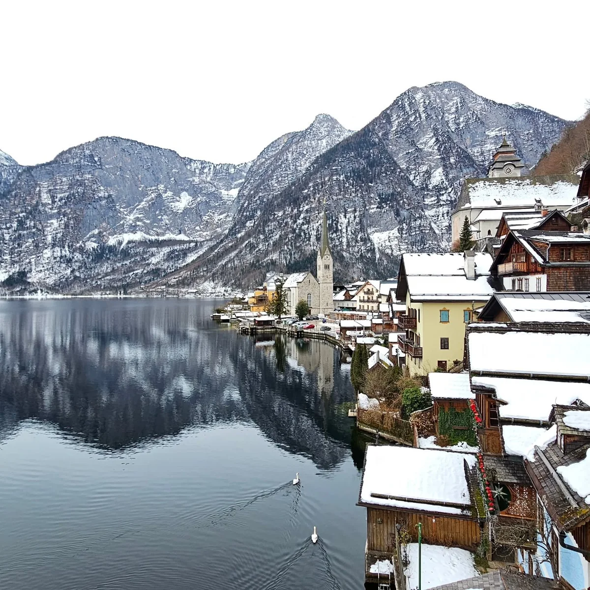
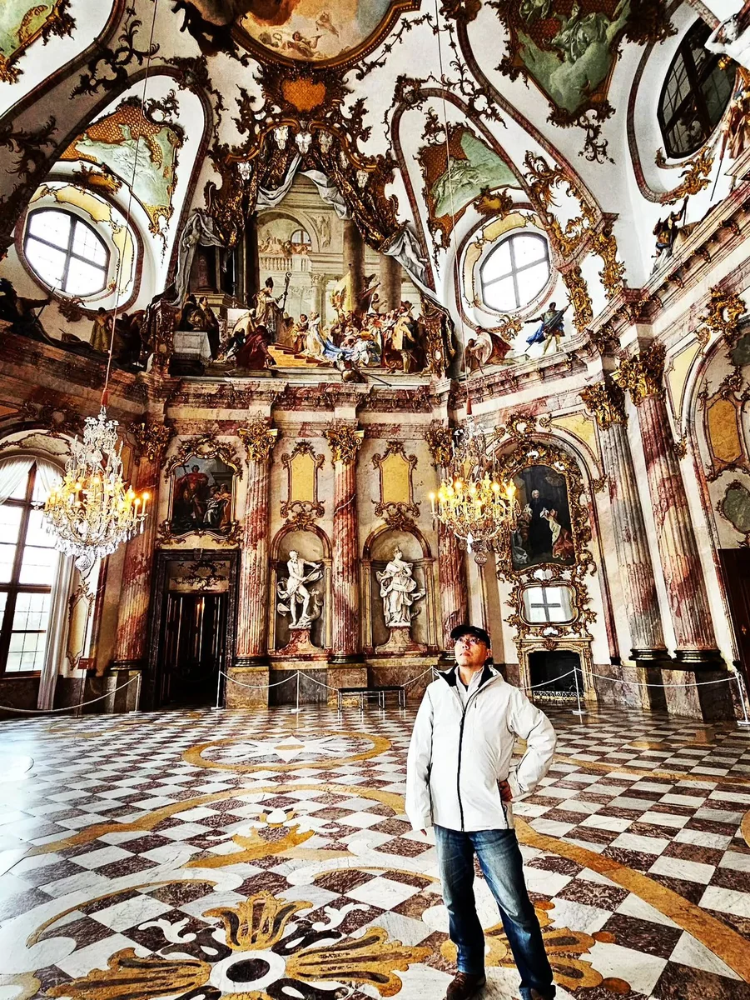
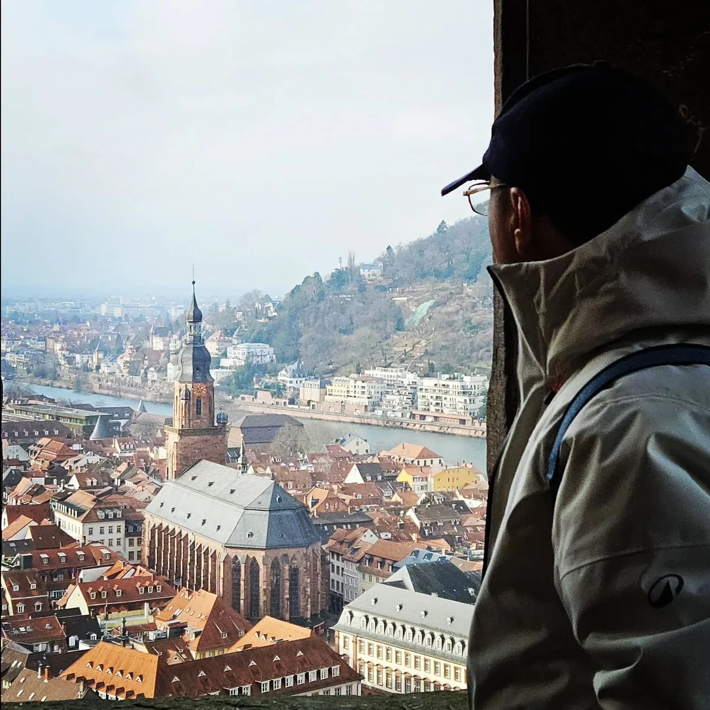

Day 02 · 奧地利
📍 Hallstatt
🏛️ 世界遺產
哈修塔特湖畔漫遊 — 夏與冬的十二年對照
「同一個地點，不同的季節與人生階段。十二年前是綠意盎然的盛夏，十二年後是白雪皚皚的清冷清晨。」

Day 02 · 奧地利「同一個地點，不同的季節與人生階段。十二年前是綠意盎然的盛夏，十二年後是白雪皚皚的清冷清晨。」

Day 07 · 德國「符茲堡是『藝術＋酒』的城市。白天看世界最大穹頂天頂畫，傍晚上橋喝一杯，冬天來，反而更剛好。」

Day 08 · 德國「海德堡是『剛剛好的浪漫』。不浮誇、不壯闊，但走過老橋、看著城堡染上夕陽，會理解為什麼那麼多人把心留在這裡。」